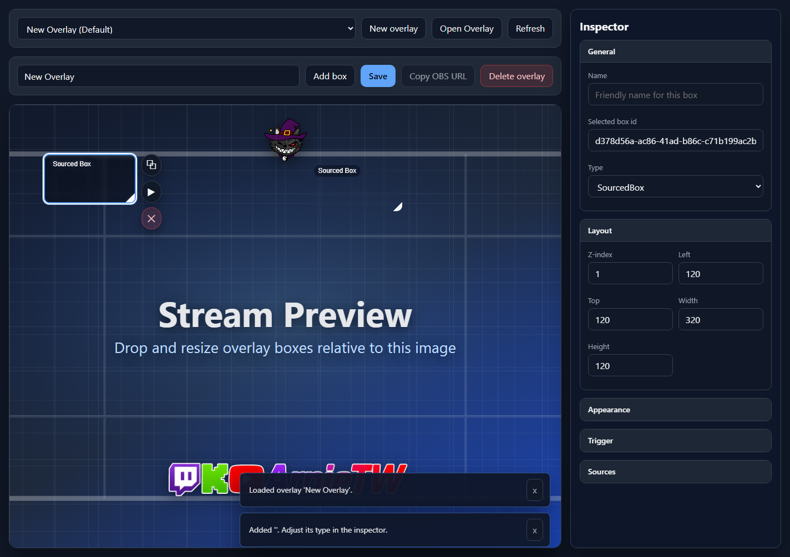
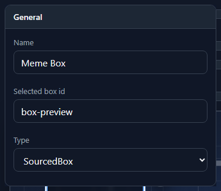
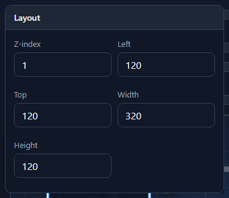
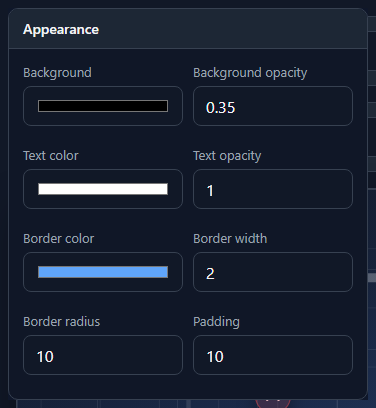
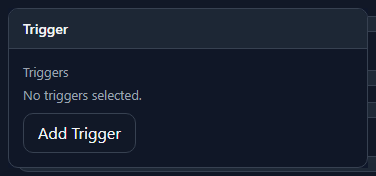
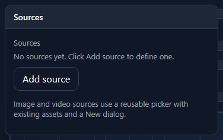

Inside Component
Box
A box is a positioned region inside an overlay. The box inspector controls where it sits, how it looks, what type of box it is, which sources it can show, and which triggers run it.
Access Inspector

You can access the Box inspector in two ways: click Add box to create and select a new box, or select an already populated box on the stream preview stage. Once selected, the right inspector switches from Stream Preview settings to Box settings.
Action
What happens
Add box
Creates a new SourcedBox at the default position, selects it, and opens the inspector for immediate editing.
Select existing box
Loads that box into the inspector. This works for empty boxes and populated boxes that already have sources or triggers.
Stage drag/resize
Move or resize the selected box directly on the stage. The Layout fields update to match.
General

General identifies the selected box and controls its type.
UI option
What it means
Name
A friendly label for the box. Use names like Chat callout, Meme video, or TTS bubble so the trigger/source lists stay readable.
Selected box id
The internal id for the selected box. It is read-only and useful when debugging saved overlay JSON or logs.
Type
Chooses the box behavior: SourcedBox, WheelPicker, or Group.
Layout

Layout places the box on the overlay stage. Values are stored relative to the overlay canvas, so the OBS browser source can scale with the scene.
UI option
What it means
Z-index
Layer order. Higher values appear above lower values when boxes overlap.
Left
Horizontal position from the left edge of the overlay.
Top
Vertical position from the top edge of the overlay.
Width
Box width. The minimum is 24.
Height
Box height. The minimum is 24.
Appearance

Appearance controls the box frame and the default text presentation used by the stage preview.
UI option
What it means
Background
The box background color.
Background opacity
Transparency of the background from 0 to 1.
Text color
Default text color for the box preview.
Text opacity
Transparency of the preview text from 0 to 1.
Border color
The outline color around the box.
Border width
Outline thickness from 0 to 20.
Border radius
Corner rounding from 0 to 100.
Padding
Inner spacing from the box edge to its content, from 0 to 100.
Trigger

The Trigger section decides when the box runs. It lists saved trigger bindings and opens the Add Trigger dialog for new ones.
UI option
What it means
Triggers
The saved trigger bindings for this box. Each row can be renamed, edited, or deleted.
Add Trigger
Opens the
Add Trigger control to bind a Streamer.bot command, action, or raw event.
Sources

Sources are the actual content the box can show or play. This section appears for SourcedBox boxes.
UI option
What it means
Sources
The source list attached to the selected box. A box can have one source or several sources that triggers sequence through.
Add source
Opens the
Add Source Dialog to add text, media, URL, TTS, or reusable defined sources.
Box Types

Type
Inspector behavior
SourcedBox
The normal box type for memes, videos, images, text, TTS, browser widgets, and audio cues. Shows Sources and Trigger sections.
WheelPicker
Shows Wheel Picker settings: title, pick list, spin duration, optional chat response, and trigger-token support for {{wheel.result}}.
Group
Groups child boxes together. Shows Group Settings for child visibility and hides the normal Sources section.